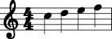

install.packages("gm")Lab 8
Due Thursday April 10 at 11:59 PM
Part 0 - tuning up
Thursday April 17 is our last lab, and to celebrate, we will do something fun and silly. In order for this to go smoothly, please download the following programs onto your personal computer if you have not already done do:
-
MuseScore Studio: https://musescore.org/en
- select Download MuseScore Studio without MuseHub.
Once you have downloaded these things, open RStudio, and install the gm package:
Once you have done all of those things, copy this code into the console and try to run it:
If everything went according to plan, the Viewer pane in the lower right will be launched, and inside you’ll see the following:
Desired output

If that worked, you’re all set! Sit tight until next week.
Part 1 - eating spinach
There is nothing fun or glamorous about today’s lab. All we’re trying to do is use computer simulation to drill down on the interpretation of a classical confidence interval, which is a fundamental concept in statistics, and one that both students and “experts” alike are prone to bungle.
Imagine we have a sample of iid binary data from a Bernoulli distribution with some unknown probability of success \(p_0\in[0,\,1]\):
\[ X_1,\, X_2,\, X_3,\,...,\, X_n \overset{\text{iid}}{\sim}\text{Bern}(p_0) \]
So each observation is of the form
\[ X_i=\begin{cases} 0 & \text{something did not happen} \\ 1 & \text{something did happen}. \end{cases} \]
You can think of 1/0 however you like: heads/tails, success/failure, true/false, win/lose. If we were in 101 or 199, these data might come to us as a lil’ baby data frame with \(n\) rows and one column, like this:
# A tibble: 5 × 1
x
<int>
1 1
2 1
3 0
4 1
5 0This could be me flipping a coin five times and recording the outcome, or baking five soufflés and recording which rose and fell, or giving five performances of Turandot and recording how many times I crack or land the money note in Act 2. You get the idea.
The purpose of collecting and analyzing these data is to estimate the unknown probability of success \(p_0\). This is the true probability of this event happening: the true probability of the coin coming up heads, etc. We don’t know what this number is, but given data, we seek to construct a best guess. A plausible method for guessing \(p_0\) is to compute the sample proportion:
\[ \hat{p}_n=\frac{1}{n}\sum\limits_{i=1}^n X_i. \]
This is the fraction of the time that I empirically observed the target event occurring, and with enough data, perhaps this is a a good estimator of the event’s probability. Indeed, from lecture we know that the sample proportion is unbiased and consistent:
\[ \begin{aligned} E(\hat{p}_n)&=p_0\\ \text{var}(\hat{p}_n)&=\frac{p_0(1-p_0)}{n}\\ \hat{p}_n&\overset{\text{prob}}{\to}p_0 \quad (\text{weak LLN}). \end{aligned} \]
The estimator has other properties, and this estimator is not the only one we could consider, but clearly we’re barking up the right tree. Our guess is correct on average, and with enough data, we’re nailing it. Good enough.
The sample proportion \(\hat{p}_n\) is an example of a point estimator: given a sample of data, we calculate this number, and it provides our best guess at the unknown quantity of interest (the estimand). But one of the signal characteristics of statistics as a discipline is the quantification of uncertainty. Instead of just a single-number best guess (which is important!), we seek to produce a range of likely values that communicates how reliablyy estimated \(p_0\) is given the data we have. This can be achieved with a confidence interval.
A confidence interval is an interval \((L_n,\,U_n)\subseteq \mathbb{R}\) with the following property:
\[ P(L_n<p_0<U_n)\geq 1-\alpha. \]
We want the coverage or confidence level of the interval to be high (90%, 95%, 99%, etc), so we typically take \(\alpha=0.1, 0.05, 0.01, ...\) Just like the point estimator \(\hat{p}_n\), the bounds \(L_n\) and \(U_n\) of the interval are computed from the data. The data are random, and so the bounds are random variables. When we refer to \(P(L_n<p_0<U_n)\), we are referring to the sampling distribution of the random interval. This is why it is improper to compute a confidence interval and say “there is a 95% chance that the true value is in this interval right here.” This is not guaranteed.
There are many many ways to compute a confidence interval for any given estimation problem, but in lecture we focused on the one you are most likely to have seen in a course like AP Statistics. If \(n\) is large, the central limit theorem guarantees that the standardization of \(\hat{p}_n\) is approximately distributed like \(\text{N}(0,\,1)\):
\[ \frac{\hat{p}_n - p_0}{\sqrt{\frac{p_0(1-p_0)}{n}}}\overset{\text{dist}}{\to}\text{N}(0,\,1). \]
Who cares? Because the CLT is a general result that applies to any distribution (so long as mean and variance are finite), it gives us a method for constructing approximate confidence intervals for the mean of any data. In the case of the binary data we have, the CLT-based approximate confidence interval has the form
\[ \underbrace{\hat{p}_n}_{\text{point estimate}}\pm \underbrace{z\left(1-\frac{\alpha}{2}\right)\times \sqrt{\frac{p_0(1-p_0)}{n}}}_{\text{margin of error}}. \]
The form of this interval is familiar: “point estimate plus or minus some margin of error.” Recall that \(z(p)=F_Z^{-1}(p)\) is our notation for the quantiles of the standard normal distribution. The interval above is what we derived in class, but the one we will use in practice is
\[ \underbrace{\hat{p}_n}_{\text{point estimate}}\pm \underbrace{z\left(1-\frac{\alpha}{2}\right)\times \sqrt{\frac{\hat{p}_n(1-\hat{p}_n)}{n}}}_{\text{margin of error}}. \]
The entire point of this exercise is that we do not know \(p_0\), so it’s silly to have a confidence interval formula that relies on knowing it. Replacing \(p_0\) with \(\hat{p}_n\) remains valid, and this is the sort of thing you might prove in STA 332. So, here’s what we’ve got:
Approximate \(100\times (1-\alpha)\%\) confidence interval for the probability of success
Given data \(X_1,\, X_2,\, X_3,\,...,\, X_n \overset{\text{iid}}{\sim}\text{Bern}(p_0)\), we can estimate \(p_0\) with \(\hat{p}_n=n^{-1}\sum_{i=1}^nX_i\), and if we take
\[ \begin{align*} L_n&=\hat{p}_n-z\left(1-\frac{\alpha}{2}\right)\sqrt{\frac{\hat{p}_n(1-\hat{p}_n)}{n}}\\ U_n&=\hat{p}_n+z\left(1-\frac{\alpha}{2}\right)\sqrt{\frac{\hat{p}_n(1-\hat{p}_n)}{n}}, \end{align*} \]
then the central limit theorem (and some other things) ensures that
\[ P\left(L_n<p_0<U_n\right)\approx 1-\alpha \]
if the sample size \(n\) is large enough, whatever that means.
We see that the bounds of our interval depend on \(\hat{p}_n\), which is random. Different random samples of data will give us different point estimates and confidence intervals. So the coverage statement \(P\left(L_n<p_0<U_n\right)\approx 1-\alpha\) refers to the behavior of the random interval bounds across repeated sampling.
Task 1
Pretend that we know for a fact that \(p_0 = 0.4\).
- Use
rbinomto simulate \(n=10\) realizations from Bern(0.4) and store them in a vector. - Compute \(\hat{p}_n\) for your simulated data.
- Compute a 90% confidence for your simulated data (remember
qnorm?). - Is the true value \(p_0 = 0.4\) in the interval you just computed?
- What is the probability that the true value is in the interval you just computed?
What are we driving at?
One dataset, one point estimate, one interval. That’s all you’re going to have in practice. And that interval you computed for your data is either going to contain the true value or it’s not, with probability 100% or 0%, whatever the case may be. So the “90%” statement is not referring to the one-shot reliability of a particular realization of the interval on a single dataset. It is referring to the reliability of the interval method across datasets. So the sampling variability of the interval.
Task 2
One of the main ideas in classical statistics is sampling variability. We model data as a random sample from an unknown distribution. Different random samples will give different point and interval estimates. So the point and interval estimates are themselves random quantities, and we can itemize their performance and reliability by studying their sampling distribution and seeing how the estimates vary across datasets. If they vary a little, we are comforted. If they vary a lot, we are troubled.
- Fill in this function:
sampling_distribution <- function(p0, n, M){
# p0: the true probability of success
# n: the sample size of each iid dataset from Bern(p0)
# M: the number of alternative datasets to generate
}Inside, you should have a for loop. The loop cycles through \(M\) iterations, each time simulating a data set of size \(n\) from Bern(p0). For each of those datasets, compute the sample proportion of ones (“successes”) in that dataset. At the end, you will have a collection of \(M\) estimates. So, \(M\) realizations of \(\hat{p}_n\). Plot a histogram of them: I like breaks = "Scott" as you know, make sure it’s a density histogram, and fix the range of the horizontal axis to xlim = c(0, 1).
-
Play around with your function. Adjust
p0andnand see what happens to the picture. In particular, convince yourself of these facts we have proven:- the sampling distribution is centered on the true value;
- the sampling distribution’s spread (variance) shrinks as the sample size grows;
- the shape of the sampling distribution resembles a bell curve for large \(n\);
Here’s something true that we haven’t proven. The convergence of the sampling distribution to the normal is faster when the underlying distribution of the data is symmetric, and slower when the underlying distribution is highly skewed (this is a consequence of the Berry-Esseen theorem). What does that mean in this case? Can you use your function to illustrate that?
Task 3
You just simulated the sampling distribution of the sample proportion. Now let’s think about the sampling distribution of the confidence interval. When you repeatedly sample new datasets and compute a new confidence interval for each one, what fraction of those intervals contain the true value?
- Fill in this function. It will be similar to your function in the previous task, but in each iteration of the loop, compute a confidence interval for that dataset, and check if the true value (whatever you chose for
p0) is included in the interval. After the loop is done, tally up the fraction of your \(M\) intervals that contained the true value.
interval_coverage <- function(p0, n, M, alpha){
# p0: the true probability of success
# n: the sample size of each iid dataset from Bern(p0)
# M: the number of alternative datasets to generate
# alpha: confidence level of the interval
}Here is a schematic of what you’re implementing: \[ \underbrace{ \begin{matrix} &&\textrm{Bern}(p_0)&\\ &&&&\\ \swarrow & \swarrow & \cdots & \searrow &\searrow \\[0.25cm] x^{(1)}_1 & x^{(2)}_1 & & x^{(M-1)}_1 & x^{(M)}_1\\[0.25cm] x^{(1)}_2 & x^{(2)}_2 & & x^{(M-1)}_2 & x^{(M)}_2\\[0.25cm] \vdots & \vdots & \cdots & \vdots & \vdots \\[0.25cm] x^{(1)}_{n} & x^{(2)}_{n} & & x^{(M-1)}_n & x^{(M)}_{n}\\[0.25cm] \Big\downarrow & \Big\downarrow & & \Big\downarrow & \Big\downarrow \\[0.25cm] (L_n^{(1)},\,U_n^{(1)}) & (L_n^{(2)},\,U_n^{(2)}) & \cdots & (L_n^{(M-1)},\,U_n^{(M-1)}) & (L_n^{(M)},\,U_n^{(M)})\\ &&&&\\ \end{matrix} }_{\text{What fraction of these intervals contain the true value of $p_0$? It had better be $\approx1-\alpha$!}} \]
- If \(n\) is large, your function had better spit out a number close to \(1-\alpha\). But if \(n\) is moderate or small, it may not. And as we saw in the previous task, you might have a harder time achieving the prescribed coverage if \(p_0=0.001\) versus if \(p_0=0.4\). Use your function to illustrate these points. Consider this sequence of sample sizes: \[ n = 10,\, 30,\, 50,\, 100,\, 150,\, 200,\, 250. \] Apply your function to each sample size. Use \(\alpha = 0.05\). Create a line plot with sample size on the x-axis and the coverage of the confidence interval on the y-axis. Do this twice: once for \(p_0=0.1\) and again for \(p_0=0.5\).
What are we driving at?
As \(n\) increases, you should see the interval coverage creep up to 95%. When \(p_0=0.5\), this will happen pretty much immediately. When \(p_0=0.1\), it will take a minute to get going.